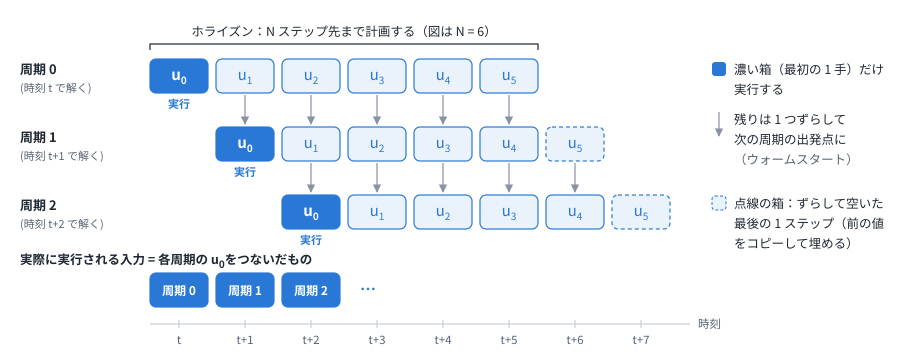
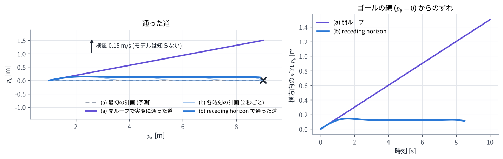

01. 最適制御問題と receding horizon
この章のゴール
- ロボットの動きを、離散時間のモデル \(x_{t+1} = f(x_t, u_t)\) で書ける
- 「良い動き」を、コストの合計として書ける
- 有限ホライズン最適制御問題の各部分が何を表すか説明できる
- 計画した入力の列の最初の 1 手だけを実行し、毎周期解き直す (receding horizon) 理由が分かる
つながり この章で作る最適制御問題は、MPC (02〜04 章) と MPPI (05・06 章) の両方が解く「共通の問題」です。この章では解き方には触れず、問題の形だけを固めます。
0. この章で使う記号
| 記号 | 意味 | この教材の 2 輪ロボットでは |
|---|---|---|
| \(x_t\) | 時刻 \(t\) の状態 | 位置 \((p_x, p_y)\) と向き \(\theta\) |
| \(u_t\) | 時刻 \(t\) の入力 | 速度 \(v\) と角速度 \(\omega\) |
| \(\Delta t\) | 1 ステップの時間 | 0.1 秒 |
| \(f\) | モデル (次の状態を計算する式) | 下の式 (1) |
| \(N\) | ホライズン (何ステップ先まで考えるか) | 30 ステップ (3 秒) |
| \(\ell\), \(\phi\) | 各時刻のコスト、最後の時刻のコスト | 目標からのずれの 2 乗など |
| \(U\) | 入力の列 \((u_0, \dots, u_{N-1})\) | 2 × 30 = 60 個の数 |
| \(\hat{x}\) | 今の状態 (センサから推定したもの) |
1. ロボットのモデル
1.1 差動 2 輪のモデル
この教材では、左右の車輪の速さを変えて進む・曲がるロボット (差動 2 輪) を例にします。状態は位置と向き、入力は前に進む速度と回る角速度です。
意味は「\(\Delta t\) 秒のあいだ、今の向き \(\theta_t\) の方向に \(v_t \Delta t\) だけ進み、\(\omega_t \Delta t\) だけ回る」です。連続時間の運動を短い時間で区切って近似したもので、まとめて \(x_{t+1} = f(x_t, u_t)\) と書きます。
1.2 数値で 2 ステップ進めてみる
\(x_0 = (0, 0, 0)\) (原点で \(x\) 軸の向き) から、入力 \(u = (v, \omega) = (1.0, 0.5)\) を 2 回続けます (\(\Delta t = 0.1\))。
1 ステップ目で向きが 0.05 rad 変わったので、2 ステップ目は少し左 (\(+p_y\)) へ進んでいます。
1.3 ロールアウト: 入力の列が決まれば未来が決まる
入力の列 \(U = (u_0, \dots, u_{N-1})\) を決めれば、式 (1) を順に当てはめるだけで、未来の状態 \(x_1, \dots, x_N\) が全部決まります。これを ロールアウト と呼びます。
ここが大事な点です。私たちが選べるのは入力の列 \(U\) だけで、未来の状態はその結果として決まる と考えます。ですから「良い動きを探す」とは「良い入力の列を探す」ことです。
2. コスト: 「良い動き」を数で表す
2.1 各時刻のコスト
「良い動き」を、悪さの合計が小さい動きとして表します。この教材のデモでは、各時刻の悪さ (段コスト) を次の 3 つの和にしています。
| 項 | 意味 | デモの重み |
|---|---|---|
| \(\lVert p_t - p_t^{\mathrm{ref}} \rVert^2\) | 目標点からのずれ。目標点の列は、ゴールへ向かう直線の上を 0.8 m/s で進む点 | \(q_{\mathrm{ref}} = 1\) |
| \(\omega_t^2\) | 回りすぎ。ふらふらした動きを抑える | \(q_\omega = 0.1\) |
| \(\max(0, d_{\mathrm{s}} - \lVert p_t - o_{i,t} \rVert)^2\) | 人 \(i\) の予測位置 \(o_{i,t}\) から安全距離 \(d_{\mathrm{s}} = 1.05\) m より内側に入った深さの 2 乗。外にいれば 0 | \(q_o = 40\) |
数値で確かめます。ある時刻に、目標点から 0.2 m ずれていて、\(\omega = 0.5\) rad/s で回っていて、人との距離が 0.85 m だとすると
人の安全距離に 0.2 m 入り込むと、目標から 0.2 m ずれるのの 40 倍の罰になります。重みの比が、何をどれだけ優先するかを決めます。
2.2 最後の時刻のコスト (終端コスト)
ホライズンの最後の状態 \(x_N\) には、別の重みをつけます。
ホライズンの外 (3 秒より先) のことは考えないので、その代わりに「最後の時点で目標から離れていたら強く罰する」ことで、先のことを少しだけ反映します。
2.3 なぜ 2 乗にするのか
- 0 のときに最小で、なめらか (微分できる)。そのため、コストを「ずれの 2 乗の和」と見て、02 章 のガウス・ニュートン法がそのまま使える
- 大きなずれほど強く罰する
なお、MPPI はコストが 2 乗の形でなくてもかまいません (段差のようなコストでも使えます)。これは 05 章 の大事な性質です。
2.4 制約
コストとは別に、守らなければならない条件 (制約) もあります。
- 入力の上下限: デモでは \(0 \le v \le 1\) m/s、\(-1.5 \le \omega \le 1.5\) rad/s
- 状態の制約: 「人から一定距離以上離れる」「壁にぶつからない」など
デモでは、状態の制約は 2.1 の第 3 項のように 罰 (コスト) として入れています。破ってもよいが破ると高くつく、という扱いです (ソフト制約)。絶対に守らせる扱い (ハード制約) もあり、MPC は得意ですが、MPPI は苦手です (07 章)。
3. 有限ホライズン最適制御問題
ここまでをまとめると、次の問題になります。
読み方:
- 変数は入力の列だけ です。2 輪ロボットで \(N = 30\) なら \(2 \times 30 = 60\) 個の数を選びます
- \(x_0 = \hat{x}\): 今の状態から予測を始めます
- \(x_{t+1} = f(x_t, u_t)\): 未来はモデルで予測します。モデルが現実とずれていれば、予測も外れます
- 有限: \(N\) ステップ先までしか考えません。デモでは \(N \Delta t = 30 \times 0.1 = 3\) 秒先まで
- 解くと、最適な入力の列 \(U^* = (u_0^*, \dots, u_{N-1}^*)\) と、それで予測した軌道が得られます
この問題を 有限ホライズン最適制御問題 (finite-horizon optimal control problem、OCP) と呼びます。
3.1 ホライズンの長さ
- 短すぎると、障害物に気づくのが遅れます。デモでは 3 秒・0.8 m/s なので、2.4 m 先までしか見えません
- 長すぎると、計算が重くなり、遠い未来の予測は外れやすくなります
- 参考: Nav2 の MPPI の既定は 56 ステップ × 0.05 秒 = 2.8 秒です (08 章)
4. receding horizon: 最初の 1 手だけ実行して、解き直す
式 (2) を解くと 3 秒分の入力の列が得られますが、実行するのは最初の \(u_0^*\) だけ です。
- 今の状態 \(\hat{x}\) を測る (推定する)
- 式 (2) を解いて \(U^* = (u_0^*, \dots, u_{N-1}^*)\) を得る
- \(u_0^*\) だけを \(\Delta t\) 秒間実行する
- 1 に戻る (時刻が 1 ステップ進んだので、考える範囲も 1 ステップ先へずれる)
考える範囲 (ホライズン) が時間とともに後ろへ下がっていくので、receding horizon (後退ホライズン) と呼びます。この「予測して、最初の 1 手だけ実行して、また予測する」のくり返しが、モデル予測制御 (MPC) の意味です。

4.1 なぜ全部を実行しないのか
モデルは現実と完全には一致しませんし、予想しない外乱もあります。毎周期、測り直した状態から計画し直せば、ずれをその都度直せます (フィードバック)。
演習 1 で確かめます。ロボットは \(p_y = 0\) の線に沿ってゴール \((9, 0)\) へ進みたいのですが、モデルが知らない横風 (\(+p_y\) 向きに 0.15 m/s) が吹いています。
- (a) 開ループ: 最初に 10 秒分の入力の列を 1 回だけ計画し、そのまま実行する
- (b) receding horizon: 3 秒先まで計画し、最初の 1 手だけ実行して、0.1 秒ごとに計画し直す

| 結果 | |
|---|---|
| (a) 開ループ | 計画の上ではゴールにぴったり着くが、実際は 10 秒後に 1.50 m ずれた所にいる |
| (b) receding horizon | 8.5 秒でゴールに着く (0.2 m 以内)。横のずれは最大 0.14 m |
(b) の細い線は各時刻の計画で、どれも「線に戻る」計画になっています。風に押されるたびに計画し直すので、ずれがたまりません。ずれが 0 にならず約 0.12 m 残るのは、モデルが風を知らないからです。風をモデルに入れれば打ち消せます。
4.2 ウォームスタート: 前回の答えを使い回す
計画し直すとき、ゼロから解く必要はありません。前回の答えを 1 ステップずらしたもの
を出発点 (初期値) にします。最後の 1 ステップは空くので、最後の値をコピーして埋めます。前回の答えは今回の答えにかなり近いので、少ない計算で済みます。これを ウォームスタート と呼びます。MPC でも MPPI でも、この工夫が速さの鍵になります。
4.3 1 周期に使える時間
制御の周期が 10 Hz なら、測る・解く・送るを全部 0.1 秒以内に終える必要があります。Nav2 の MPPI は 20〜50 Hz 程度で動かします。「速く、そこそこ良い答えを毎周期出す」 ことが求められる、というのが、両方の方法の設計を決めています。
5. 2 つの解き方の予告
| MPC (勾配を使う) | MPPI (サンプリングを使う) | |
|---|---|---|
| 入力の列の直し方 | 傾き (微分) から改善の向きを計算する | ランダムにずらした列を試し、重みつき平均する |
| 1 周期の計算 | 数回の反復。毎回、連立 1 次方程式や QP を解く | \(K\) 本のロールアウト (並列にできる) |
| 中心の道具 | ガウス・ニュートン法 (02 章) | 重み \(e^{-S/\lambda}\) (05 章) |
ここから、MPC の列 (02〜04 章) と MPPI の列 (05・06 章) に分かれます。どちらから読んでもかまいません。
演習 1
python exercises/ex01_receding_horizon.py
開ループと receding horizon を比べ、図 docs/figures/ex01_receding_horizon.png を作ります。最適化の中身は 02〜04 章で扱うので、この演習では scipy の汎用ソルバーに任せています。
試してみること:
WINDを(0.0, 0.3)にすると、(b) のずれはどうなるかreceding_horizon()のNを 10 (1 秒先まで) にすると、動きはどう変わるか
理解度チェック
- 2 輪のモデルで、\(x_0 = (0, 0, \pi/2)\)、\(u = (1.0, 0)\)、\(\Delta t = 0.1\) のとき \(x_1\) は?
- 式 (2) の変数は何か。2 輪ロボットで \(N = 30\) なら、変数はいくつか?
- 終端コスト \(\phi\) は何のためにあるか?
- 計画した \(N\) 個の入力のうち 1 つしか実行しないのはなぜか。残りは捨ててよいか?
- ホライズンを長くすると何が良くなり、何が悪くなるか?
- 演習 1 で、receding horizon でも横のずれが 0 にならないのはなぜか?
答えの例
- 向きが \(\pi/2\) (\(+p_y\) 向き) なので、\(x_1 = (0 + 0.1 \cos\frac{\pi}{2},\ 0 + 0.1 \sin\frac{\pi}{2},\ \frac{\pi}{2}) = (0, 0.1, \pi/2)\)。
- 入力の列 \(U = (u_0, \dots, u_{N-1})\) だけ。状態はモデルで決まる。\(u_t = (v_t, \omega_t)\) なので \(2 \times 30 = 60\) 個。
- ホライズンの外のことを考えない代わりに、最後の状態が目標から離れていることを強く罰して、先のことを少し反映するため。
- モデルが現実と一致せず外乱もあるので、測り直した状態から毎周期計画し直すため (フィードバック)。残りは捨てずに、1 ステップずらして次の計算の初期値に使う (ウォームスタート)。
- 良くなる点: 遠くの障害物や目標に早く気づける。悪くなる点: 計算が重くなり、遠い未来の予測が外れやすくなる。
- モデルが横風を知らないので、毎回「線に戻る」計画を立てても、実行すると風に押される。押される量と戻す量がつり合う所で、ずれが一定 (約 0.12 m) になる。
もっと知りたい人へ
- J. B. Rawlings, D. Q. Mayne, M. M. Diehl, Model Predictive Control: Theory, Computation, and Design, 2nd ed., Nob Hill Publishing, 2017. 第 1 章が MPC の考え方の入門です。